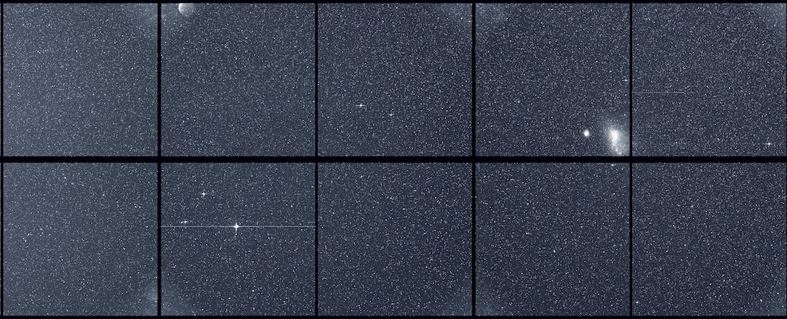

Searching for Stellar Flares
Launched in 2018, the Transiting Exoplanet Survey Telesceope (TESS), was designed to search for planets around 200,000 bright, nearby stars. To do so, it continuously stares at a patch of sky for nearly a month, meticulously recording the brightness of every bright star in its field of view every few minutes. Although only the closest and largest gas giant planets can actually be directly photographed, many smaller Earth-like worlds cause a telltale periodic dimming of their host star, as they block a tiny fraction of the star's light as they pass in front. From these dimming events, astronomers are able to measure the size of the planet, along with its distance from the host star.
One of the coolest things about working with large datasets like these as an astronomer is that there is often rich information lurking in the data that has nothing to do with the mission's intended purpose. In the case of TESS, these brightness measurements don't just tell us about the planetary population in our little corner of the galaxy, but also about the living, breathing, roiling day-to-day activities of the stars themselves.
The activity cycles of our own Sun have been a subject of interest for well over 100 years now. Because the Sun is a hot, bright ball of differentially rotating fluid (the equator of the sun actually rotates much slower than the poles), it's magnetic field lines can become bunched up and twisted. In some cases, this bunching and twisting produces sun spots, which we can observe as the move across the face of the rotating Sun from day to day. In more extreme cases, this twisting can eventually reach a breaking point, where huge amounts of material and energy are launched from the surface of the Sun as a flare event. If the Earth is in the wrong place at the wrong time, these flares can disrupt electrical grids, communication networks and (very) occasionally cause mass extinction events.
Although we have collected an incredible amount of data on the day-to-day activities of the Sun, we still don't have much context for it. Not all stars in our galaxy are the same age as the sun, and they don't all share the same internal structure or the same composition. The Sun follows a fairly regular 11-year 'cycle' between periods of quiescence and extreme activity. It is not yet known whether other stars exhibit similar activity cycles, or whether there is any dependence on age or size of the star. In addition to helping us understand more about our own Sun, having a broader understanding of where and when stars produce flares is crucial for finding other places in our galaxy that might be hospitable for life.
To help answer these questions, I built a pipeline to detect flare events from the nearly 200,000 stars that TESS observed during the first two years of its mission. The data I used was provided as a series of pre-processed light curve files, in which brightness measurements from within pre-determined target apertures are taken from the camera images at 2-minute intervals. Although the data is already pre-processed and cleaned up by NASA, it still contains a number of systematic errors, missing values and occasional erroneous measurements. Relevant to my flare detection pipeline are two particular effects of concern: cosmic ray hits which produce sudden brightness increases in the images, and reflections from Moon and Earth-shine depending on the present position of the space telescope relative to the Earth, Moon and Sun. Rather than removing these effects before processing the data, I chose to reject flare detections caused by these events, which I will discuss later.
To identify segments of the time series data that might be potential flares, I use a technique known as change point analysis (CPA). The approach is fairly straightforward: the data points are stepped through and segments where there is a sudden change in the mean and variance are flagged as 'change points'. Pairs of these change points are then used to mark the boundary of the candidate flare events.
If I was only concerned with when flare events potentially happen, this CPA technique would be enough. However, another crucial piece of information is how much energy is actually released from each flare. This can be obtained by integrating the area underneath the flare event in the time series data. However, the baseline brightness of the target stars is not constant (see below). Much like the sun, many other active stars exhibit a semi-periodic variation in brightness as star spots rotate in and out of view. To get the true brightness change due to the flare, we first need to subtract out the brightness variations due to rotation. Additionally, flare events produce a fairly well-defined jump in brightness, followed by a much longer decay back to baseline. Removing the effects of rotation will also allow us to fit a flare brightness model to the candidate events and make it easier to reject erroneous changes in brightness that are not actually due to flares.
To model the underlying baseline brightness, I use a supervised machine learning technique known as a gaussian process (GP). GPs actually takes the training data and produce a full covariance matrix, rather than just predictions for the output variables. To do so, we must specify a kernel function, which describes, for each input value, how the surrounding data points contribute to the model. In the case of modeling the underlying stellar brightness, I use a quasi-periodic kernel function, which will lock on to the brightness variability due to the rotation of the star.
But how to ensure that the GP doesn't incorporate the actual flare events into the model? After all, we want to subtract the underlying brightness variations and only be left with the flares so we can more easily fit a model to them. On a first pass, the GP will try to include the flares in the model, but because they are not quasi-periodic, they probably won't fit well. We can use this to our advantage, and iteratively fit the GP model to the data, and then mask out out points that lie more than a few standard deviations from the mean. After 10 or 20 interations, the algorithm settles down and stops rejecting points and we are left with a model that is only informed by the non-flaring segments of our timeseries data. In addition, the GP provides an error estimate of the baseline brightness under the flare events, which allows us to predict the uncertainties of the flare properties (such as energy released)!
This error estimate actually provides an incredibly crucial piece of information, which allows for an additional step of vetting in our detection pipeline. With an error estimate for both the GP model and the original brightness measurements taken by the space telescope, we can perform some model selection on our candidate flare events. Real flares tend to begin with a sharp increase in brightness, followed by a gradual decay back to baseline. Many of the spurious brightness changes that the telescope picks up (due to cosmic rays or stray reflections inside the optics) are much more symmetric in time. To filter out these events, we fit both a gaussian curve and an analytic 'flare' curve to each event marked by the CPA function. The idea here is that the actual flare events should not fit well to a bell curve.
Because we are working with such a large sample of stars, we can go beyond looking at individual flare events and ask some questions about the overall demographics of the galaxy. To do so, however, requires some extra information that is not provided by TESS. It has long been thought that stars as most active when they are young, and they tend to calm down as they age. Determining the age of a star, however, turns out to be a rather difficult thing to do. But if we look at a large sample of stars, there are a couple of proxies for age that we can then compare with flare rates.
The first of these age proxies has to where a star is within our galaxy. Stars tend to form near the midplane of the galactic disk and then gradually wander away through repeated gravitational encounters with other stars. If you look at a cutaway view of the Milky Way, you see older and older stars as you move up or down from the galactic disk. If there truly is a correlation between age and flare activity, we should expect to see most flare events coming from the midplane of the galaxy as well.
Although TESS provides incredibly accurate brightness measurements, it only tells us about a star's 2 dimensional position on the sky. To actually figure out how where each of these stars lies in relation to the galactic disk, we would need distance information as well. Fortunately, the European Space Agency is currently operating a mission galled Gaia, which is compiling a database of incredibly precise 3D positions and velocities for nearly 1 billion Milky Way stars. A significant fraction of these stars are also TESS targets that fall within our flare sample.
It turns out that roughly 7,000 of the flare stars detected by our pipeline also have 3D position information measured by Gaia. After separating the flaring and non-flaring stars in the sample and binning them by height above the galactic midplane, an incredibly clear trend pops out. Most stars lie within about 100 pc of the midplane, and we find that the fraction of flaring stars drops by nearly an order of magnitude within this distance.
Another indicator of age we can look at comes from measuring the rotation periods of the stars in the sample.